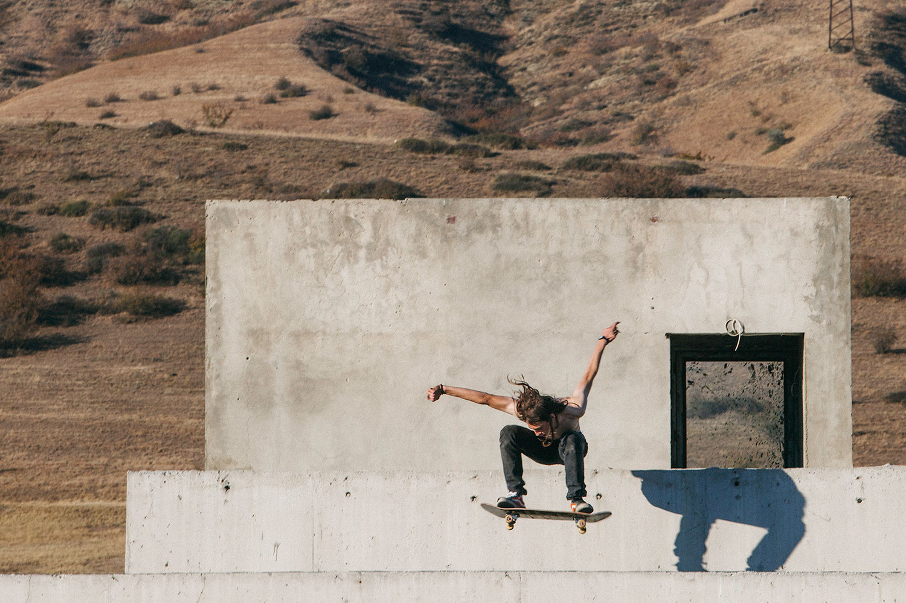
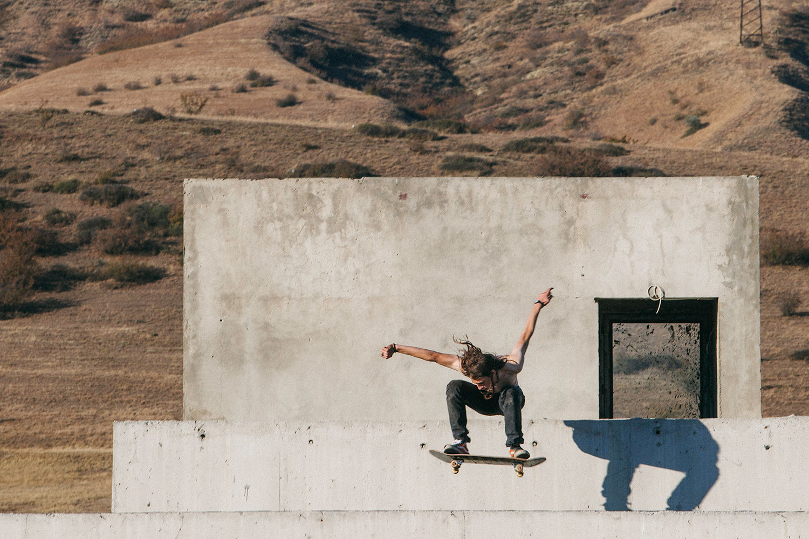

GSC (Georgian skate culture) is a platform where you can get all the information about skate culture in Georgia.
GSC (Georgian skate culture) is a platform where you can get all the information about skate culture in Georgia.
მაშინ, როცა თბილისში არც სპეციალური აღჭურვილობა არსებობდა სკეიდბორდინგისთვის და არც სკეიტ-პარკები, თბილისელი ახალგაზრდები ვაკის პარკის წინ იკრიბებოდნენ და ასფალტიან გზაზე “ბორბლებიანი დაფით” ექსტრემალურ ექსპერიმენტებს ატარებდნენ. ყველაზე კარგ ლოკაციად კუს ტბის გზა ითვლებოდა, მას “ტრასას” უწოდებნენ და ამ სამანქანო გზაზე, როგორც დამწყები, ისე პროფესიონალი სკეიტერები ეშვებოდნენ.
80-იანი წლების შემდეგ ქართულ სკეიტბორდინგში ბევრი რამ შეიცვალა. დღეს საქართველოში 6 სკეიტ პარკია, 1 სკეიტ შოპი - MARGO SKATESHOP და ბრენდი - TAMRA SKATEBOARDS. არსებობს ქალაქები მაგ: გორი, რუსთავი... რომლებიც უკვე წლებია ითხოვენ სკეიტპარკს ქალაქში და მისი არ არსებობის მიუხედავადაც, ამ ქალაქებს საკმაოდ წარმატებული სკეიტერები ყავს.